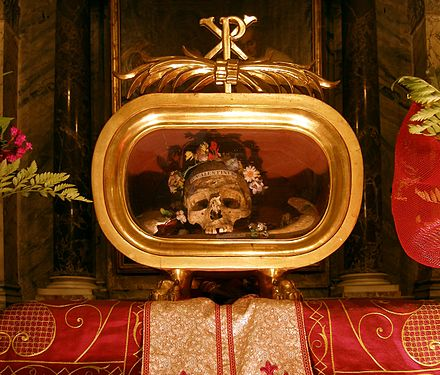
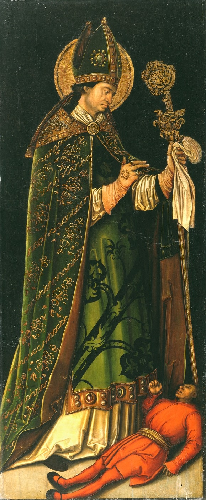

Saint Valentine (Italian: San Valentino, Latin: Valentinus) was a widely recognized 3rd-century Roman saint, commemorated in Christianity on February 14. From the High Middle Ages his Saints' Day is associated with a tradition of courtly love. There are two different Saints' Lives for a St Valentine on February 14, but they are probably the same man. Saint Valentine was a clergyman – either a priest or a bishop – in the Roman Empire who ministered to persecuted Christians. He was martyred and his body buried at a Christian cemetery on the Via Flaminia close to the Ponte Milvio to the north of Rome, on February 14, which has been observed as the Feast of Saint Valentine (Saint Valentine's Day) since 496 AD.
Relics of him were kept in the Church and Catacombs of San Valentino in Rome, which "remained an important pilgrim site throughout the Middle Ages until the relics of St. Valentine were transferred to the church of Santa Prassede during the pontificate of Nicholas IV". His skull, crowned with flowers, is exhibited in the Basilica of Santa Maria in Cosmedin, Rome; other relics of him were taken to Whitefriar Street Carmelite Church in Dublin, Ireland, where they remain; this house of worship continues to be a popular place of pilgrimage, especially on Saint Valentine's Day, for those seeking love. For Saint Valentine of Rome, along with Saint Valentine of Terni, "abstracts of the acts of the two saints were in nearly every church and monastery of Europe", according to Professor Jack B. Oruch of the University of Kansas.
Saint Valentine is commemorated in the Anglican Communion and the Lutheran Churches on February 14. In the Eastern Orthodox Church, he is recognized on July 6; in addition, the Eastern Orthodox Church observes the feast of Hieromartyr Valentine, Bishop of Interamna, on July 30. In 1969, the Roman Catholic Church removed his name from the General Roman Calendar, leaving his liturgical celebration to local calendars, though use of the pre-1970 liturgical calendar is also authorized under the conditions indicated in the motu proprio Summorum Pontificum of 2007. The Roman Catholic Church continues to recognize him as a saint, listing him as such in the February 14 entry in the Roman Martyrology, and authorizing liturgical veneration of him on February 14 in any place where that day is not devoted to some other obligatory celebration, in accordance with the rule that on such a day the Mass may be that of any saint listed in the Martyrology for that day.
